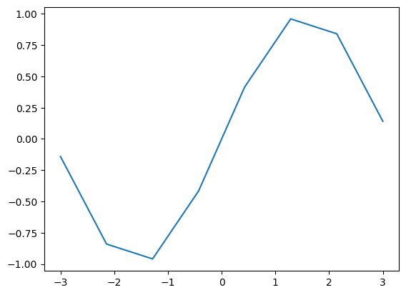
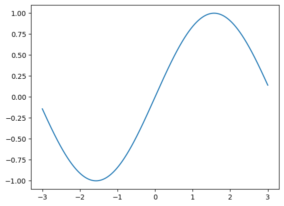
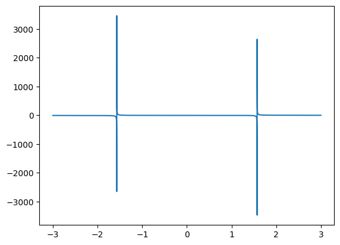
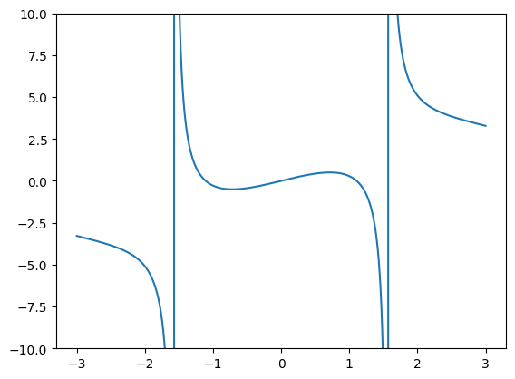
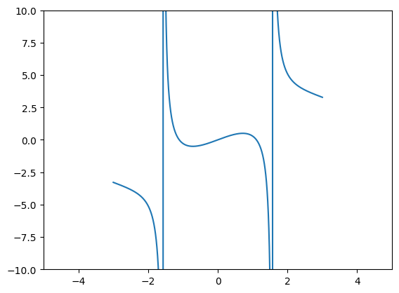
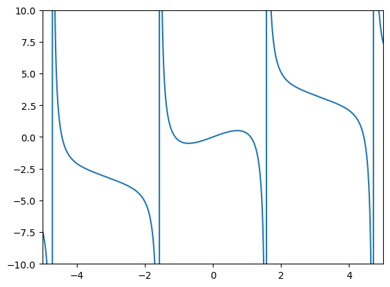

import matplotlib.pyplot as plt, sympy as sp, numpy as np
sp.init_printing()
x, i, pi, e = sp.symbols('x'), sp.I, sp.pi, sp.E
x, y = sp.symbols("x y", real=True) # Reele variabler
z1, z2, z3 = sp.symbols("z1 z2 z3") # Komplekse variabler
Givet en funktion f = x**2 + 5 kan vi simpelt plotte den ved:
X = np.linspace(-2, 4, 400)
# Giver en graf der går fra -2 til 4 i x-aksen
# Grafen vil have 400 punkter over x-aksen, flere punkter giver højere detalje
f = x**2 + 5
plt.plot(x, f)
plt.show()
Sinus kurve med 8 punkter:
x = np.linspace(-3, 3, 8)
f = np.sin(x)
plt.plot(x, f)
plt.show()

x = np.linspace(-3, 3, 800)
f = np.sin(x)
plt.plot(x, f)
plt.show()
Sinus kurve med 800 punkter:

På nogle grafer, især høj-frekvens data eller med asymptoter, kan en meget høj sampling rate være nødvendig for at vise grafen akkurat, men oftest er en værdi på $\approx 400$ være fint.
En graf som denne fortæller ikke særligt meget:
x = np.linspace(-3, 3, 9000)
f = np.sin(x) + x**2/x - np.tan(x)
plt.plot(x, f)
plt.show()

Ved at tilføje plt.ylim(-10,10) kan vi begrænse y-aksen
x = np.linspace(-3, 3, 9000)
f = np.sin(x) + x**2/x - np.tan(x)
plt.ylim(-10,10)
plt.plot(x, f)
plt.show()

Der er også en tilsvarende plt.xlim(start, slut) kommando.
Bemærk! Hvis du har defineret en akse som en np.linspace giver det ikke mening at gøre lim større end den, da der ikke vil være plottet noget der.
x = np.linspace(-3, 3, 9000)
f = np.sin(x) + x**2/x - np.tan(x)
plt.ylim(-10,10)
plt.xlim(-5,5)
plt.plot(x, f)
plt.show()

Ved at gøre np.linspace større kan vi fikse det
start_x = -5
stop_x = 5
x = np.linspace(start_x, stop_x, 9000)
f = np.sin(x) + x**2/x - np.tan(x)
plt.ylim(-10,10)
plt.xlim(start_x,stop_x)
plt.plot(x, f)
plt.show()

Når du bruger samme værdi flere steder giver det god mening at skifte det til en variable som vist her, så de altid vil ændres sammen